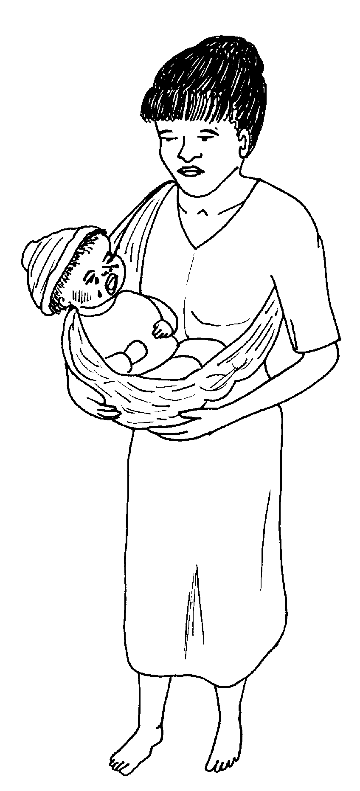
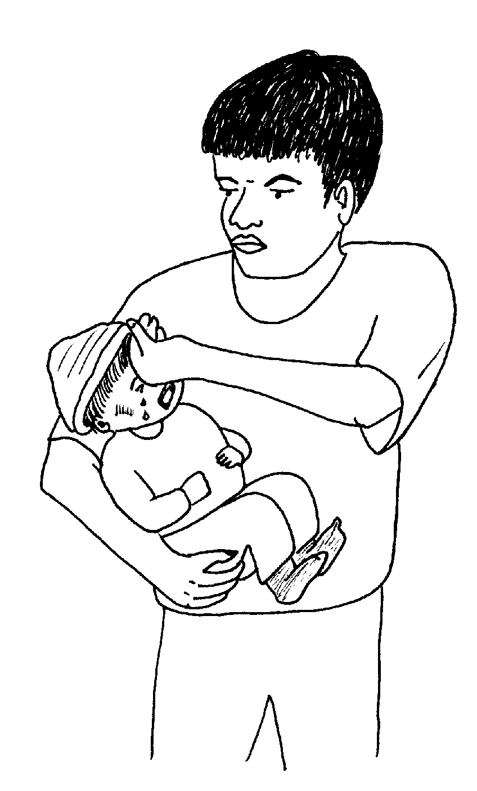
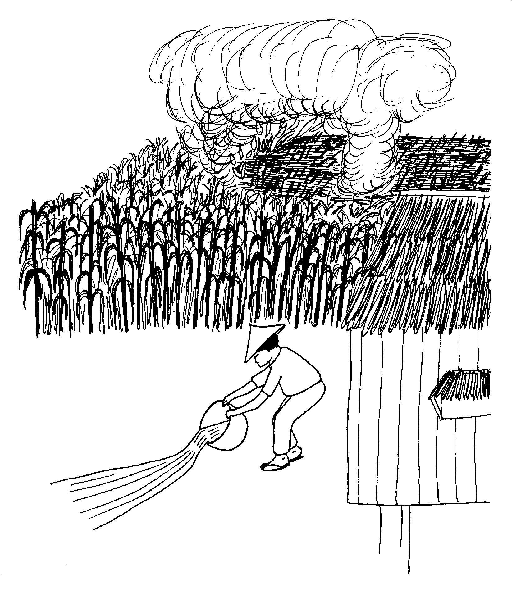
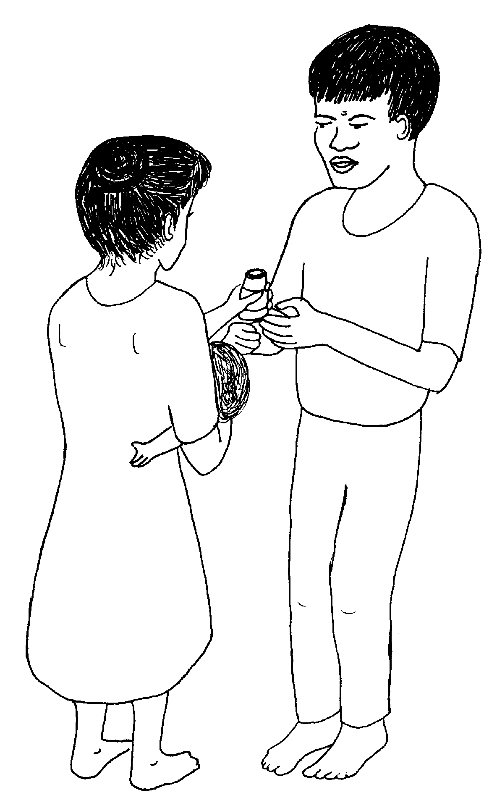
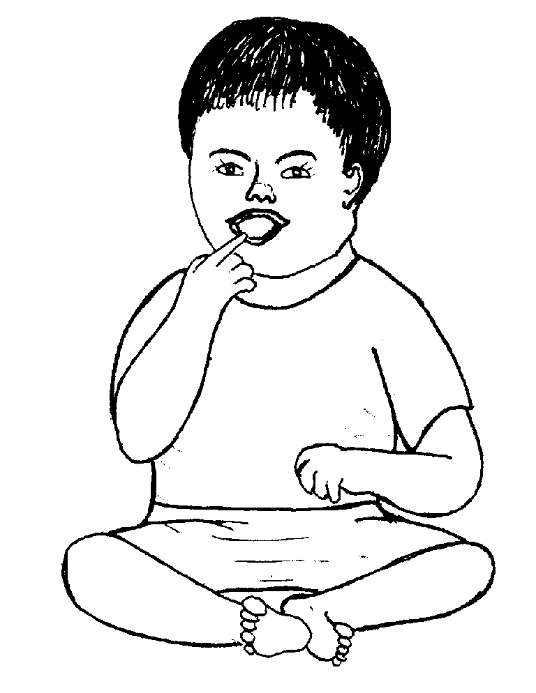

Vernacular Lexicon
A
B
BAP
BL
D
E
G
H
I
K
KI
L
LA
LIP
M
N
O
P
PA
R
S
SE
SIN
T
TE
TIN
U
V
W
Y
Z
Healthbooks
Sabeka ne aldew, neinu-inu amana si Lolita te amanag sinehew ka anak din wey keneg lipereng te meudtu.

Te pegsapipi rin te bate, naheram din ne migmeinit ka bate wey egkelkelen.
Miggendiye sikandin te asawa rin ne si Inuk ka egpabulig su nalaggew rin e.
Pegsamsam ni Inuk te ulu te bate, mania te subla ne meinit.

Migkahiyan din ka asawa rin te, “Eglusungan bes ka anak ta. Ne seini naa himuwa nu.
“Luungi nu te kumbale wey malasi nu peinuma te weyig wey pasusuwa nu su eyew keneg kammaraan.”
Ne migkahi si Lolita te, “Egbukusan te buwa sikandin te ulesen su eyew kene din egkaagsilan?”
Ne migkahi si Inuk te, “Nakarineg a riyet duman etew neg ilingen kun due, piru kenen malehet sika. Iyan malehet kag luungan te kumbale wey egpeinumen te dakel ne weyig ka minsan hentew neg lusungan su eyew eglibuwanan te keinit te lawa rin.”
Puun dutu, in-awaan e ni Lolita ka bate te kumbale wey impeinum din te dakel ne weyig wey impasusu rin su eyew keneg kammaraan.

Ne migweil-weil si Inuk, migsusubid sikandin te manggad ne imbukus din te lawa te bate wey ka duma ne manggad, egsubiren din ne diyet lawa te bate iggulipis.
Natagtaheed, migkahiyan e man-e ni Inuk si Lolita te, “Ka lusung, sabekan paahi neg pekeyimatey te me kahew diyet lawa ta.
“Piru egpuun due, egmahuye ki degma ne keilangan neg gimmeley ki.
“Piru sika, ingkeilangan te lawa ta su eyew egpatey ka me kahew.”

Ne migpabulus sikandin ka migkahi te, “Egpekeiling sika te hapuy neg pakasilab te kamet, iling ded kag keyitabu te kahew neg katutung te keinit te lawa te etew keg lusungan.”
“Iling naan ded degma keg lusungan ki, keilangan neg inum ki te dakel ne weyig su eyew keneg kammaraan ka lawa ta.”
“Purisu, kene amanan delikaddu ka lusung.
“Purisu naa degma, keilangan ne due weyig ne igparulug diyet hapuy su kema keg kanlab-kanlab neg egkeyimun delikaddu.
“Ne sika ne weyig kag gamiten ta eyew ig-ebuk.”
Ne mig-inse si Lolita te, “Egbehayan ku naa te tablitas kag lusungan?”
Ne migkahi si Inuk te, “Kenen keilangan neg behayan ta te parasitamul kag lusungan su ka lusung ka paahi neg keyimatayan ka mareet ne kahew diyet lawa ran.

“Iyan egpekeyimatey te mareet ne kahew diyet lawa teg lusungan ka keinit te lusung din.
“Iyan de meupiyan bawi teg lusungan ka egpeinum te dakel ne weyig wey ke egpasusu. Wey kene kew en iyag behey te aspirin te me bate su egpakarereet kandan.
“Piru keg deralu kew te pulmumya, keilangan neg inum ka te antibayutik su eyew egpatey ka kahew diyet lawa niyu, wey keilangan neg gendiye kew te huspital su eyew keneg pabulus ka dalu.”

Puun dutu, intuman ni Lolita ka langun ne ingkahi kandin te asawa rin. Te ware naluhey, neulian e ka anak dan minsan ware dan behayi te tablitas.
Delikaddu naa ka lusung wey ke kene? Mania?
Nekey-a kag gimuwen ta su eyew keneg keyimun delikaddu ka lusung?
Ken-ua egpeinuma te bawi ka etew neg lusungan?
Ka lusung, egpekeyimatey te mareet ne kahew diyet lawa ta su egkatutung te keinit te lawa wey hendue teg pepeyimmelayen ka lawa ta puun due. Saatu-pa, kene amanan delikaddu ka lusung. Piru ke kene ki eg-ayad-ayad degma, sengekakuwa neg delikaddu. (Lukib 97, 98)
Keneg keyimun delikaddu ka lusung ke eg-aween ta ka kumbale teg lusungan, wey egpeinumen te dakel ne weyig. Ke bate pad, keilangan ne layun deg pasusuwen su eyew keneg kammaraan. Kene niyug bukusi te ulesen ka etew neg lusungan su delikaddu sika. Egsusubid te manggad ne igbukus te lawa wey ka duman manggad ne nasubid, iggulip diyet lawa teg lusungan. (Lukib 95, 99)
Kene niyug behayi te bawi ka etew neg lusungan su ka lusung egpakabulig te lawa ta neg pangimatey te mareet ne kahew. Piru ke masumpit e ne dalu iling te pulmunya, keilangan ne igpeendiye pad sikandin te huspital eyew egkabehayan sikandin ke nekey ne bawi ka para te sika ne dalu. Kenad amanag lusungan ka etew ke bayew rin egkeulii. (Lukib 101)
This page last updated: 28-Dec-2019
Copyright © 2009-2010